3.6 Specify an Inference Rule
Inference rules are proof rules that can be used to: (1) infer new hypotheses in a proof, or (2) split the goal into sub-goals, or (3) discharge a proof obligation. The general structure of an inference rule is as follows:
 |
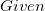 | |
|||
|
 |
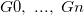 | |||
|
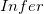 | |
|||
|
|
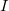 |
where each of 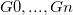 and is an Event-B predicate. The above inference rule can be read in the following two ways : "given conditions 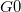, ..., 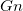 one can infer ", and "one can prove , if one can prove each of , ..., ".
Inference rules can be defined as part of a block of "Proof Rules". Each proof rules block may contain a number of metavariables, rewrite rules and inference rules. To create a rules block, under the heading "PROOF RULES" in the structured editor, press  .
.
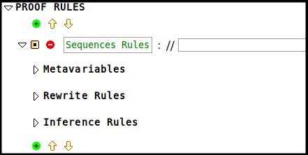
Metavariables define the variables used to specify proof rules. Each metavariable has a name and a type. For our example, we need one metavariable 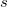.
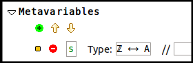
The following example shows an inference rule concerning finiteness of sequences:
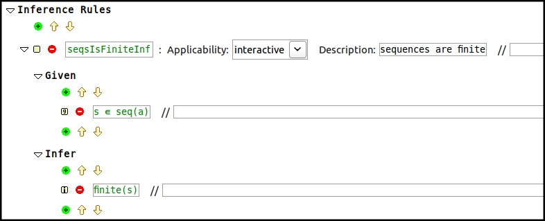
The applicability of a proof rule indicates whether the rule should be applied automatically or interactively. The description provides a human-readable view of the rule. The description provided will be the tool tip for the rule in the proof UI. The following inference rule is an automatic rule that states that the tail of a non-empty sequence is a sequence.
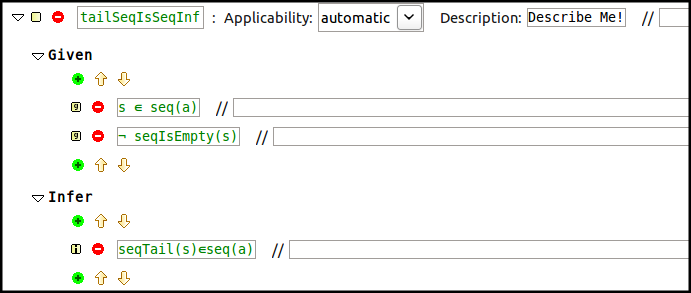